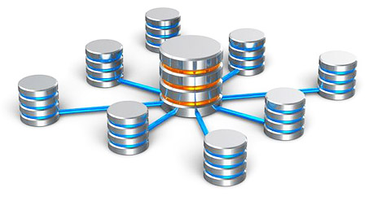

An organised collection of data is known as a database. Data can be of many types and should serve as a relevant piece of information. Applications that are designed to interact with users, other applications as well as the database itself are known as database management systems. These database management systems capture data and also analyse them, and can be of huge importance if analysed and introspected properly. A general purpose DBMS or a database management system allows administration of a database, as well as creation, query, update and definition of the database also.
Some of the most popular and used DBMS are Oracle, Microsoft SQL Server, PostgreSQL, Microsoft Access, MySQL, SyBASE among others. Generally a database is not portable across different DBMS but using standards like ODBC, JDBC and SQL DBMS can be interoperable. A single application properly programmed, can work with more than one database.
Oracle, MYSQL, PostgreSQL and Microsoft SQL Server are some of the best database software that is in use across the world. Database programs also known as database applications are meant primarily for entering and retrieving data or information from a computer managed database. A DBMS that follows a relational model based on Codd’s principles are known as RDBMS or relational database management systems. RDBMS are presently being favoured over hierarchical databases and network databases for their user friendly designs and use.
Databases and DBMS can be relational or XML or may be categorised according to their DB model. They may also be categorised according to the server or mobile they run on, or the query language used to access the DB and many other factors. We have some of the most dedicated and talented database programmers who can design and develop database programs and DB based application that suits your needs. They do this after understanding your need thoroughly and also understanding all other things necessary, in detail.
They also have significant mastery in most of the DBMS that are popularly used like Oracle, MySQL, Microsoft Access, Microsoft SQL server, MySQL, PostgreSQL, SYBASE and other DBMS. They choose the best option and develop tailor-made solutions for your database management. They also train you and your people on using the database programs. We also offer technical support and service for all our products and lot more at the most affordable prices.
ORACLE
Oracle specialises in developing as well as marketing computer hardware systems but its flagship product has been Oracle database, which is its own brand of database management systems. Other than Oracle database management software, the company also builds tools for development of database and some middle level softwares, ERP softwares, CRM and SCM softwares also. The oracle database also referred to as Oracle RDBMS or simply Oracle is an object relational database management system.
The Oracle database management system is one of the most powerful relational database management system and has immense capability of handling a huge amount of data. Each and every different set of Oracle is specifically designed to address a particular set of requirements. Platform independent Oracle database is extremely easy to install and can be managed without much sweat.
We are one of the leading companies that provide web based and IT related services. We also have an energetic and experienced team that handles all database related programming and support. They are also among the most talented Oracle database developers and can install, implement, manage and tune your oracle database management applications. They can also provide complete and comprehensive life cycle implementation process of all Oracle database products.
Their strong background and depth as an Oracle database management team makes them invaluable for managing the RDBMS and its applications. Remote setting up and administration of database servers are also managed by expert database administrators. We also build websites, social networking pages and build your web presence and web identity as a whole.
As a highly experienced and most cost effective team of experts, we also integrate your web pages and social networking pages with your Oracle database and other CMS or CRM. We also embed analytical tools and other applications to help you understand customer dynamics and trends as well as sales force performance and other related issues. All this will help you attain your business goal and requirement.
Microsoft SQL Server
There are different editions and versions of Microsoft SQL Server database management for a variety of workloads and different audience as well. The Microsoft SQL server database is the most commonly used tool as well as the most accepted tool for designing and developing a variety of desktop, web based or enterprise database management applications. The variety of features in the software ensures high performance, availability and also scalability.
To develop effective and efficient Microsoft SQL server database management applications, experience and understanding of the software architecture is very important. We have a team of highly talented and trained experts in database management, as well as creative developers and database programmers.
They create some of the best developers who design and develop database and customise them as per requirement. They also fine tune the performance, integrate, and maintain database among other things. We also have some of the most qualified and strictest QA and testing teams and also a team of very experienced database administration and installation experts.
We also have a complete team of experienced database administrators and developers, who know Microsoft SQL server database management team and Microsoft SQL server database maintenance team and development team. We not only provide simple and customised solutions for all your needs. Cost effective RDBMS, efficient increased storage and secured data management are some of our most effective services.
We also provide and design time-consuming data management as well as dedicated customer support and technical support. We also offer back-up and restoration services for all data sizes. We offer a detailed database design and other minute tunings and developments customised to fit all your requirements. Our prices are the most competitive in the Microsoft SQL server database management service industry.
MySQL
MYSQL is also lovingly known as ‘My Sequel’ and is a relational database management system or a RDBMS. It is open source and allows multiple users to access a number of databases acting as a server. MySQL database is one of the most preferred database choices for web application uses. Most free softwares of open source origin that require full feature database management systems, often use MYSQL database management system.
MYSQL is used by some of the most used websites that include Google, Wiki, Twitter, and some of the most popular applications like Joomla, Wordpress, Drupal also use MYSQL database management for their backend. MYSQL is also a key part of Linux, Apache, MySQL, PHP/PERL/PYTHON open source software stack also known as LAMP.
We are a full service data management and hosting company with some other IT services also. We not only provide support for database management softwares but also offer MYSQL database implementation as well as implementation of Oracle, Microsoft SQL server among others. We also offer our support and expertise for a number of versions and also offer upgradation facilities.
Be it a standalone or clustered database, active or passive configurations, we will support you in all possible ways and situations. We have the most dedicated professionals, who are masters in MYSQL database management system as well as other database management systems. They not only provide database architecture but also provide design support for database implementation.
We provide expert services for fine tuning your database for better performance and best configuration too. Other than installing and configuring, our developers and programmers also configure and customise them according to the requirement of the business. We also offer integration of CMS and CRM and connect them with your database management system in addition to offering a number of application and analysis tools that will help you understand your data and their implications.
We offer customised interfaces for your MYSQL database management system. We also have round-the-clock support and trouble-shooting services for all your IT needs. We also schedule, plan, coordinate and test your existing database for performance and also carry out future database upgrades in addition to offering our expertise and other services at the most affordable prices.
PostgreSQL
PostgreSQL is also referred to as Postgres. It is an ORDBMS or object relational database management system and is available for use across most platforms including Linux, Solaris, Windows and Mac OS X. It is an open source software and is released under PostgreSQL license. The PostgreSQL database is developed by volunteers employed and supervised by Red Hat and EnterpriseDB and is known as the PostgreSQL Global Development group.
Implementing the majority of SQL2008 standards, PostgreSQL database is completely transactional including DDL statements. It also has a large number of extensions, extensible data types, index methods, operators, functions, procedural languages and aggregates also. The PostgreSQL database management system is available in both desktop and server editions.
We are one of the most trusted and relied upon PostgreSQL database management services and support companies that depend upon database management companies for solutions. We not only design, develop and implement PostgreSQL solutions but also manage and monitor its performance and tune it for better performance. We also design and develop applications that are user-friendly as well as easy to use and are highly efficient and effective.
These applications and other tunings, queries and functions are designed and developed by expert database programmers only after understanding your needs and business requirements properly. We also design and develop performance check-up, architecture check-up, as well as monitoring various aspects of the PostgreSQL database management. We also design and develop many analysing software of your data regarding the content management service and the Customer Relationship Management solutions for better understanding of the data.
Integrating these interfaces in your web page as well as your social networking pages can give you a very deep insight to market dynamics as well as customer behaviour and trends. They can also be integrated with sales reports, performance monitors and other necessary data that might help you plan the future better. We also offer our top notch expertise for migration to any database management services from any other DB. We are the most economical and effective database management company and also specialize in PostgreSQL database.
SYBASE
Mark Hoffman, Jane Doughty, Tom Haggin and Bob Epstein founded Sybase in 1984,in Berkley, California. The major aim was to create a RDBMS or a relational database management system. The RDBMS will be available to many computers in a network and will be able to organise information, according to their vision. Sybase has now become a SAP company that is one of the leaders in enterprise software and services.
The Sybase database is about managing and analysing information as well as mobilising them. They use relational databases as well as data warehousing solutions, analytics and mobile application development platforms to do the same. Sybase database management technologies offer comprehensive and crucial foundation for enterprises that are not wired. Sybase database also allows managing and mobilising information or data from data centres to the point of action.
The experts at our database management services use both SYBASE data management services for developing some world class applications. These applications are customised for each and every business and can be availed from a variety of platforms. The Sybase database was designed with graphic interface for users by our experts for efficient input and data entry. The other applications that were embedded with the Sybase database management systems were designed and developed by our developers after understanding the business need in detail.
They also integrated them with other database management systems for data linking and access. They also designed some of the most innovative tools for analysis and data retrieval. The data could also be accessed in remote offices as well as on mobile devices. We have one of the best data warehousing services as well as other database related services.
We also ensure security and safety of the data and also about the databases. The DBMS we design are safe and secure from unauthorised access. We also offer support and service to all our products. Our support plans for Sybase database management clients and Sybase database is on till renewal; thereafter, they might shift to SAP products. We will also do the seamless transportation for all existing and willing customers.
Microsoft Access
Microsoft Access or Microsoft Office Access is developed by Microsoft Corp as a part of their Office Applications. It is a database management system that has a graphical user interface and software development tool with a combination of Microsoft jet database engine. The database management software is available separately or in packages of Microsoft Office editions.
Data stored by Microsoft Access is done in a format based on Access Jet database engine; it has the ability to link or import data from other databases or applications. Microsoft Access can be used to develop application software and other software application by data architects and developers. Supported by VBA or Visual basic for Application, it can also be referred with a variety of ActiveX components, Data objects among other things.
Our skilled and experienced database programming experts use all these features of Microsoft Access to create custom made DBMS and other features according to specific business needs. Though there are many preloaded and customised Microsoft Access Database templates, our programmers and designers develop customised and specialised Microsoft Access database templates for your business needs. They also integrate them with your content management services and also Customer Relationship Management among others.
The customised Microsoft Access Database templates designed by our experts can be used for multiple purposes. Our highly experienced developers can also ensure cross linking of various databases and access of data from all of these in the easiest manner possible. The database management system can be analysed after retrieving data and used for proper understanding of the business dynamics. They can also show the pathway for better ways to flourish your business.
We offer customised and specific designs for your business. We not only use Microsoft Access for Database management but we also use other database management systems like SQL, Oracle and others. We also use a combination of these databases for better and efficient results. Our designers and programmers also make sure that these databases can be accessed by users and administrators from handheld devices and those using other platforms as well. We also offer the most affordable prices for our expert services, other than our technical support.
Copyright © 2016 Mgainz Communication Pvt Ltd. - All Rights Reserved.
 +91 124 670 7927
+91 124 670 7927 support@mgainz.com
support@mgainz.com